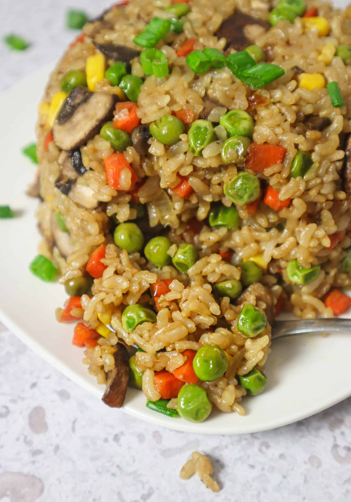

Recetas Destacadas

Arroz Frito Vegano
Una deliciosa receta de arroz frito con verduras, tofu y salsa de soja.
- 1 taza de arroz cocido
- 200g de tofu
- 1 zanahoria, picada
- 1 pimiento rojo, picado
- 2 dientes de ajo, picados
- 2 cucharadas de salsa de soja
- Aceite de oliva
- Sal y pimienta al gusto
Instrucciones:
- Calienta el aceite en una sartén grande.
- Agrega el ajo y las verduras, y cocina hasta que estén tiernas.
- Agrega el tofu y cocina hasta que esté dorado.
- Agrega el arroz cocido y la salsa de soja, mezcla bien.
- Condimenta con sal y pimienta al gusto.
- Sirve caliente.

Ensalada de Quinoa y Vegetales
Una refrescante ensalada con quinoa, verduras frescas y aderezo de limón.
- 1 taza de quinoa cocida
- 1 pepino, picado
- 1 tomate, picado
- 1 aguacate, picado
- 1/2 cebolla roja, picada
- 2 cucharadas de jugo de limón
- 2 cucharadas de aceite de oliva
- Sal y pimienta al gusto
- Cilantro fresco para decorar
Instrucciones:
- En un tazón grande, mezcla la quinoa cocida, el pepino, el tomate, el aguacate y la cebolla roja.
- En un recipiente pequeño, mezcla el jugo de limón, el aceite de oliva, la sal y la pimienta.
- Vierte el aderezo sobre la ensalada y mezcla bien.
- Decora con cilantro fresco antes de servir.

Helado de Plátano
Un delicioso helado cremoso hecho solo con plátanos maduros congelados.
- 3 plátanos maduros
- 1 cucharadita de extracto de vainilla (opcional)
- 2 cucharadas de leche vegetal (opcional)
Instrucciones:
- Pela los plátanos, córtalos en rodajas y congélalos por al menos 2 horas.
- Coloca los plátanos congelados en una licuadora o procesador de alimentos.
- Agrega la vainilla y la leche vegetal, si se usa.
- Licua hasta obtener una mezcla suave y cremosa.
- Sirve inmediatamente o congela por 30 minutos si prefieres una consistencia más firme.